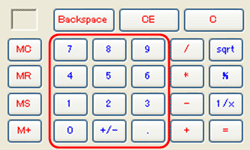

<script src="https://cdn.jsdelivr.net/gh/story-doc/js@master/storydoc.js"></script>
<link rel="stylesheet" href="../custom.css"></link>

<screen style="background-color: rgb(236, 233, 216);">
  <span style='border: 1px solid black; left: 11px; top: 8px; background-color: white; width: 240px; text-align: left; display:inline-block;'>&nbsp;</span><br>
  
</screen>

<action name="Enter <Second Number>"
        link="secondNumber.html">
User enters a number again.<br>
ユーザは、数字を再度入力する。
</action>

<action name="Clear Memory"
        link="blank.html">
User clears the memory to reset this calculation.<br>
ユーザは、計算をリセットするため、メモリを消去する。
<test>the memory is cleared.</test>
</action>

<test>the operator symbol is displayed.</test>
